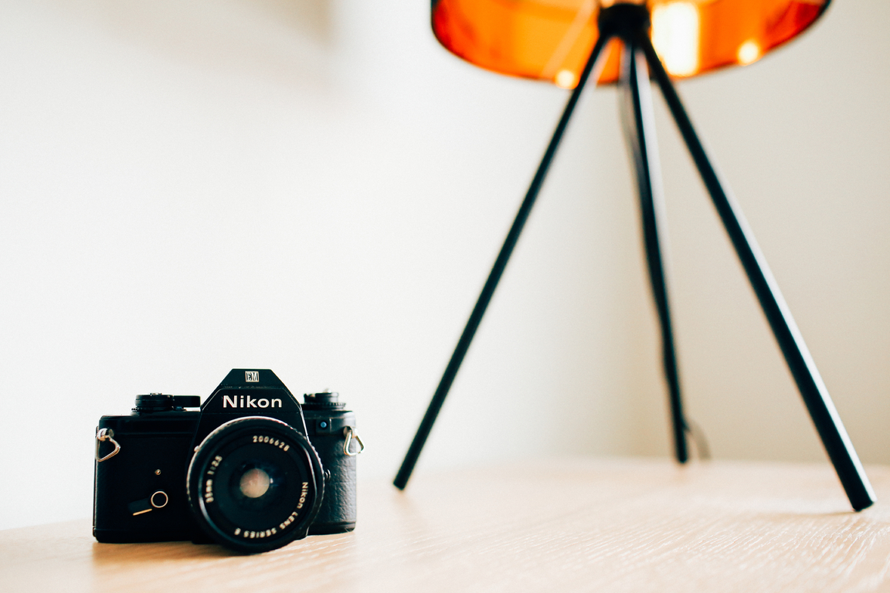

Portrait images is a picture of a person or a group of people that catches the persona of the concern by the use of powerful lighting, backdrops, and poses.Though many photographers upgrades to DSLR or Mirrorless camera to gain more control over the portrait photography. Getting great pictures of people is always a tough job.
The picture must contain mode, personality, and character, allowing the viewer to draw a conclusion about the picture in the portrait. A portrait photographer is proficient enough to take his or her pictures, this requires skill and talent to understand the human nature.
There are many sections involved in portrait, you have to think about the technical stuff like focus and exposure as well as non-technical stuff like composition and working with the live object. Here are some of the tips to click a awesome portrait photography:
Selection of lenses
Lens plays a major role in shooting a portrait image. It will change the appearance not only the subject but the background as well. Most of the photographer choose wide angle lens to get the visual effect but wide angle lens create more distortion and cause the subject face look abnormal. To add more effect to the wide angle shoot lens use tilting the camera to an angel.
When we using medium telephoto lenses like 85mm or 105mm the subject is perfectly flited but there is a distortion in the background. Background plays an important role in the image and always pay attention whats going on in the background.
The long lens such as 70 to 200mm f/2.8 is the best lens for creating an awesome portrait. It provides a soft background to enhance the portrait, not take away the subject.
Lighting

Natural lighting is a best possible way to capture the stunning portrait. The infinite condition of outdoor lighting can produce a wide range of opportunities for expression. The light will determine the mood of the final portrait and whether or not the subject is flattered. There are various types of pattern and style in the lighting you have to choose which one fits the image perfectly
We have to choose whether we have to go with hard light or soft light. Hard light is produced by a small light source and high in contrast. The soft light produced by a large light source and low in contrast. Choose the soft light if you want to flatter the subject and choose the hard light if you want an edgier look with more grit and drama.